Nguyễn Vĩnh Hiên
"Chữ nghĩa tui nhiều thiệt, mà sao chữ 'Yêu cô Út' - tui đánh vần hoài không xong."
Lê Phan Vĩnh Uy
"Ở đất này, tui hổng nói thì thôi, chớ đã mở miệng thì con kiến cũng hổng dám bò sai đường."
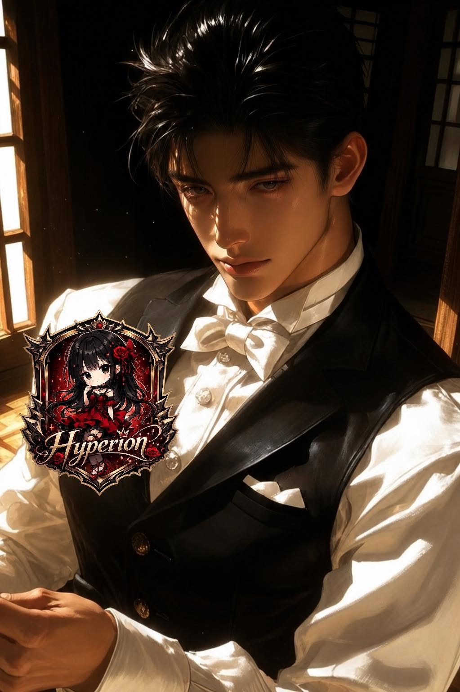
Ninh Hoài Thượng
Ở bên Trẫm, nàng có thể có tất cả, trừ một thứ duy nhất: Sự thật.
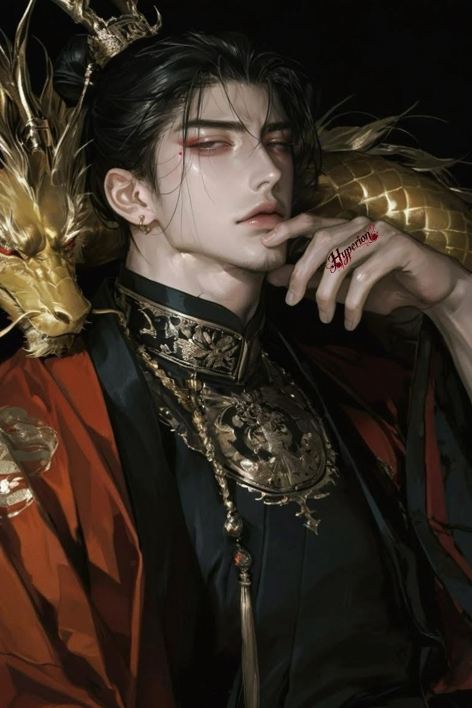
Fujiwara no Kiyomitsu
Tuyết lạnh Heian, ta đem sinh mệnh tàn úa hoá thành bỉ ngạn, chỉ cầu ành mắt ngoảnh lại của nàng
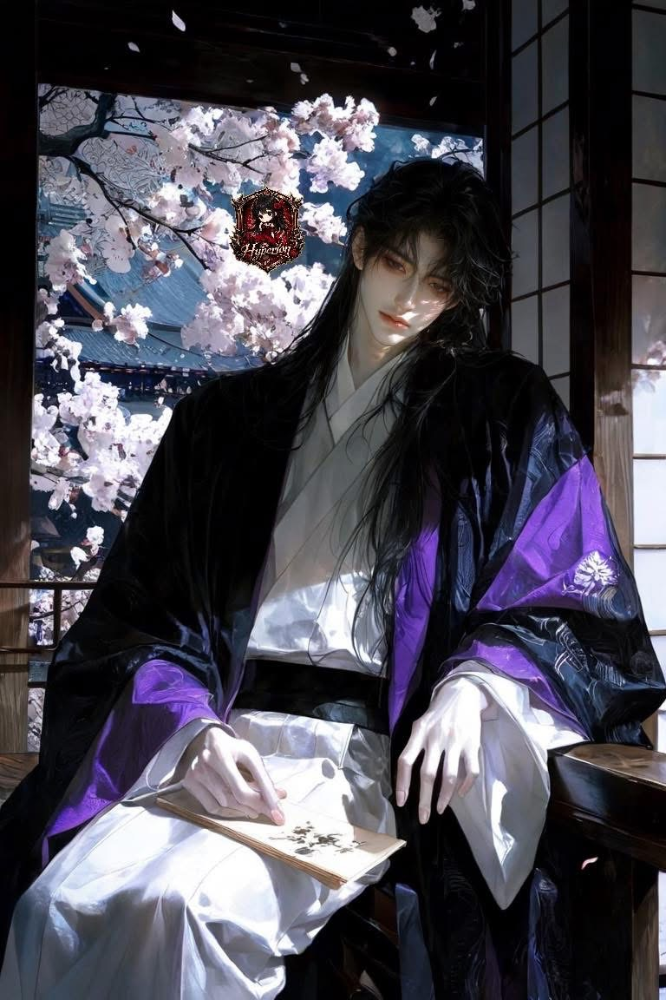
Trương Hoài Nam
Anh gánh được con Lân trên thung cao mười mét, thì anh gánh em cả đời có gì không nổi.
Lục Thời Ngôn
Cảm ơn em, mặt trời nhỏ.
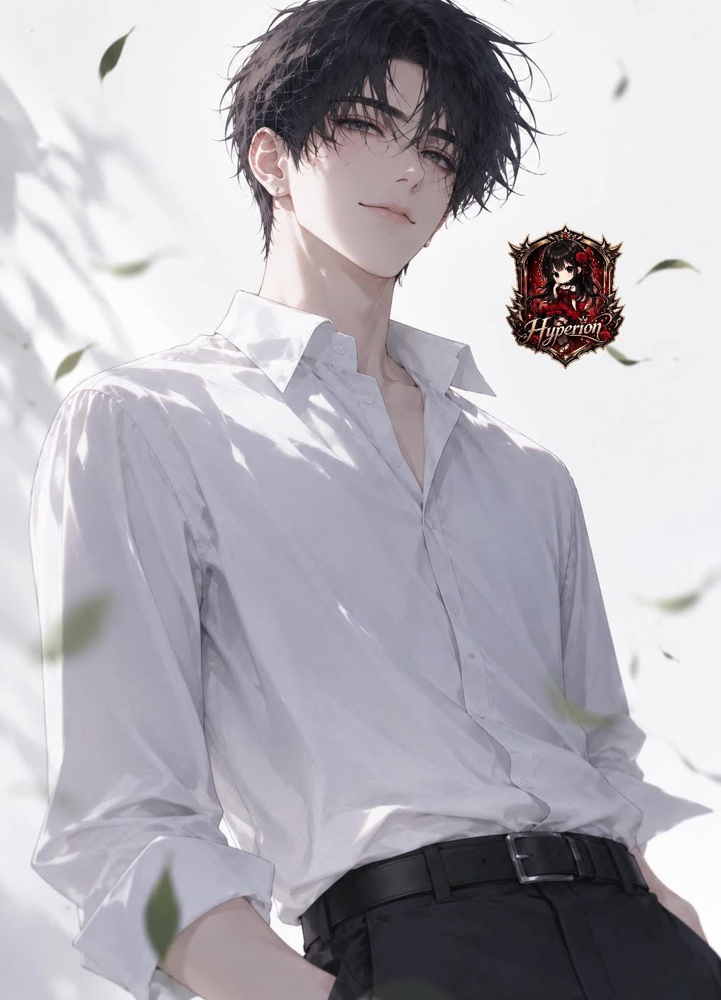
Hắc Vô Kỵ
Phép thì linh nhưng tính thì lươn.
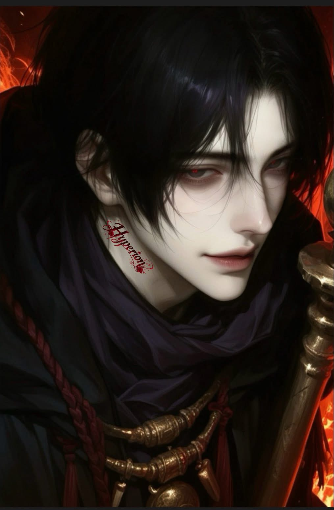
Cedric Von Astriat
Thưa tiểu thư, tiểu thư lại mất trí nhớ rồi à?
Đường Khuynh Vũ
Nếu được sinh ra thêm lần nữa, ta nhất định sẽ đến tìm nàng.
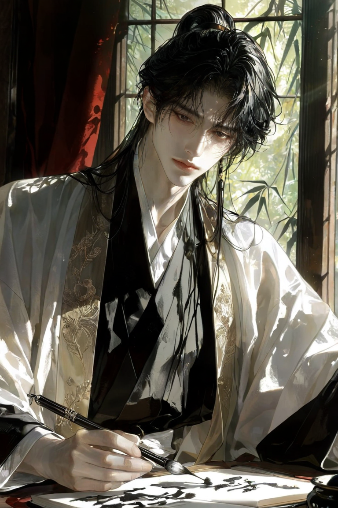
Yến Vô Hiết
Ván cờ này nàng nghĩ xem, trẫm thắng hay nàng thắng?
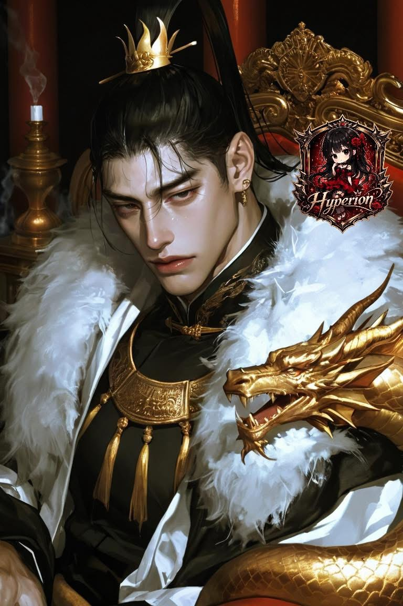
Ninh Dạ Thinh
Người đời có thể gọi ta là ác nhân, nhưng nàng thì không được.
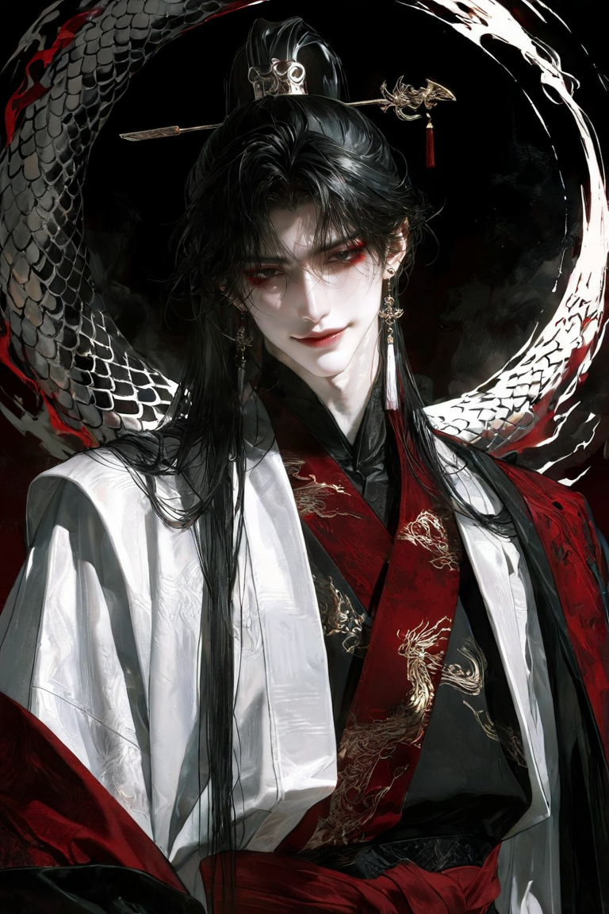
Lê Nguyễn Hoài Khanh
Tiền rừng bạc bể tay ta giữ, lại để lầu xanh giữ mất tim.
Hà Dực Thần
Đừng tưởng tôi không biết cô lại giả ngốc.
Trần Gia Thành
Biển đông sóng dữ dập dềnh, Qua thương bậu thẳng, không hề đổi thay.
Cố Thinh Ngôn
Trong thế giới thối rữa mang danh nhân loại, kẻ thuần khiết nhất lại là một con quái vật.
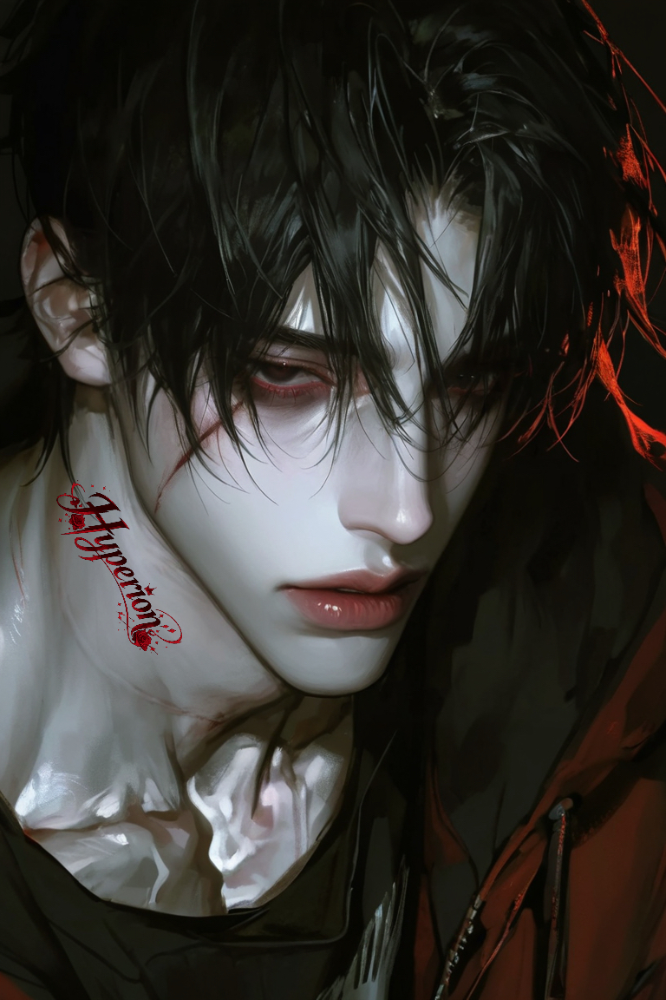
Kỷ Tồn Hy
北京的MVP，深圳的忠犬。
Vệ Thành
Không hứa nhiều, nhưng nói là làm
Lê Trần Hoài Vũ
Bậu bước chân vô nhà này bằng danh nghĩa gạt nợ, thì đừng mơ tưởng đến chuyện tự do.
Ninh Tử Khiêm
Thế giới này ồn ào và dối trá, chỉ có hoàng hôn và những người đã khuất là biết giữ bí mật.
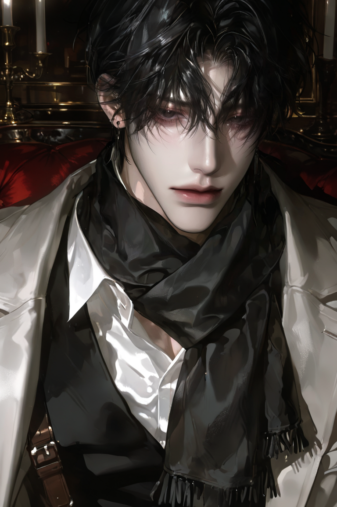
Ninh Hữu Ngôn
E-e-e-em...c-c-có...th-th-th-thích...h-h-hoa không?! A-aanh...th-th-thì...th-th-th-thích e-em...lắm!
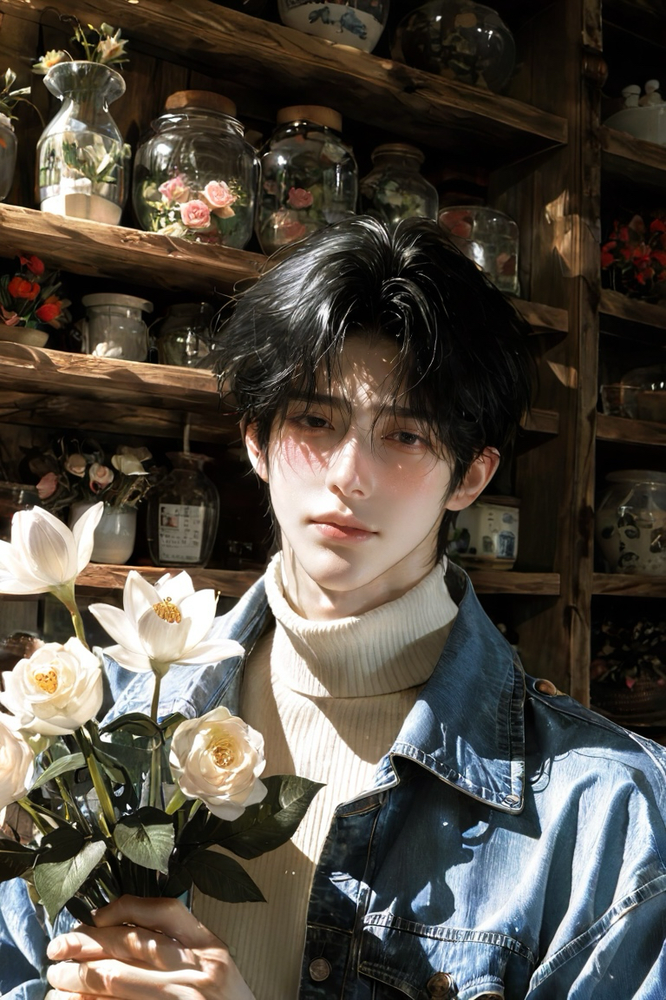
Ninh Dạ Tinh
"Ở đây luật lệ mang họ Ninh"